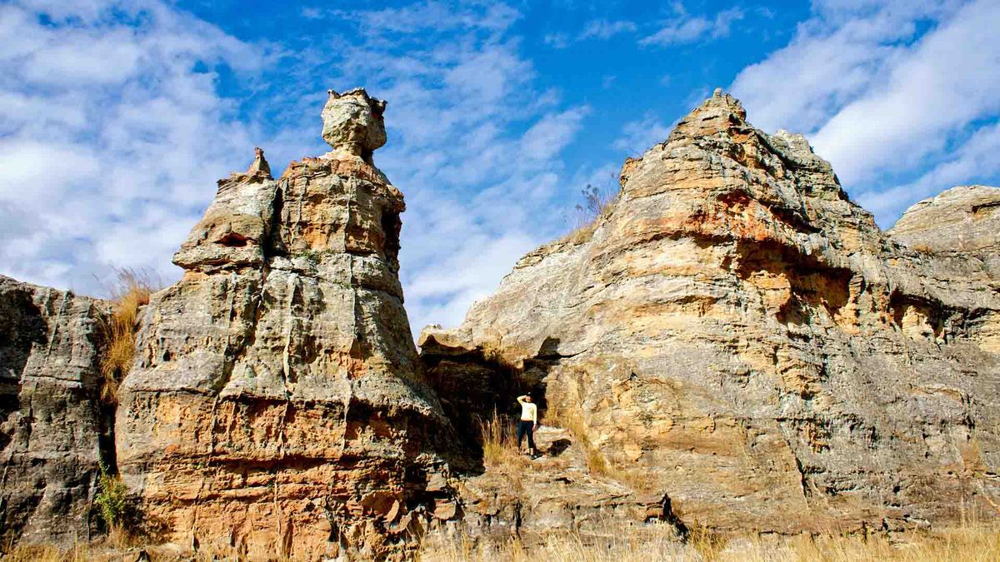
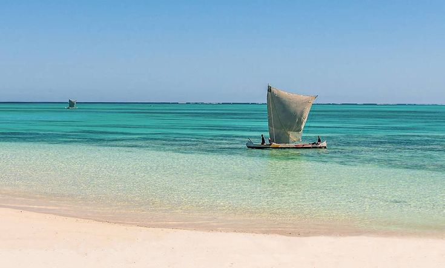
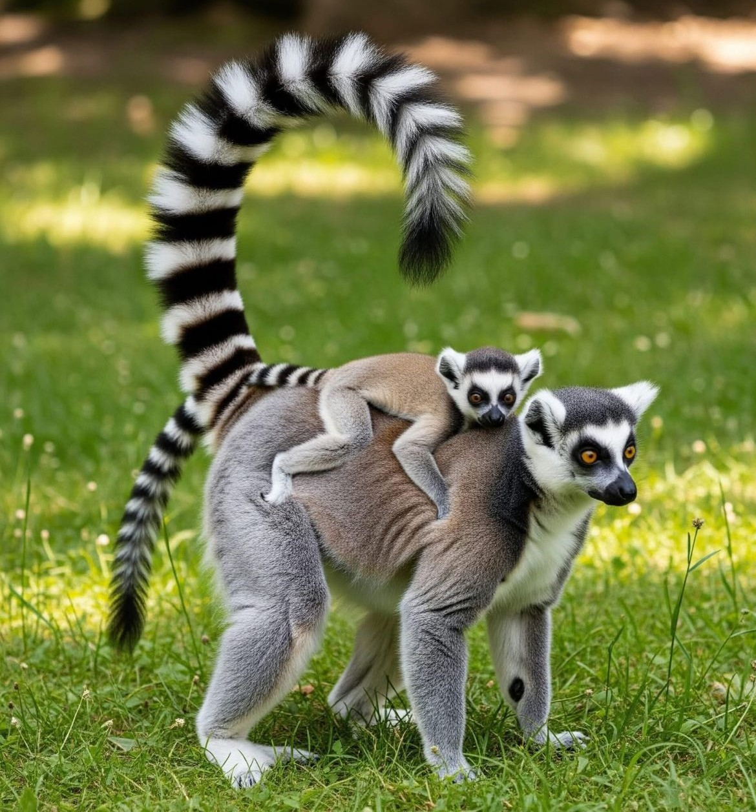
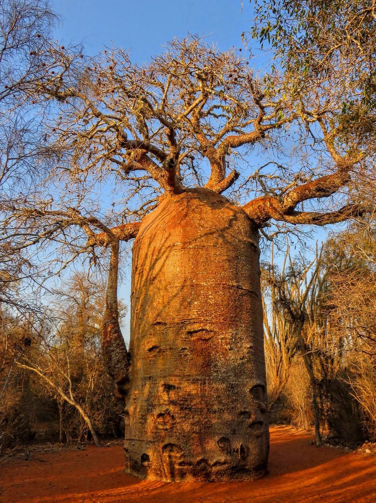
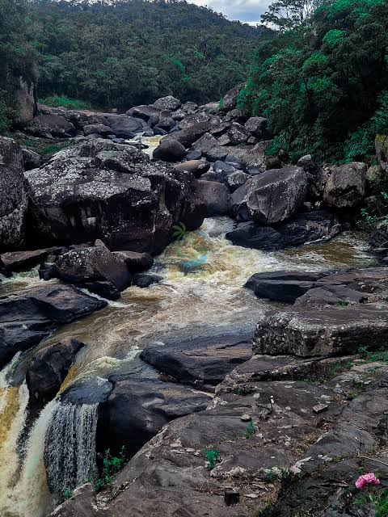

From the sculpted rock formations of Isalo to the turquoise waters of Anakao and Nosy Ve, Tuléar reveals a Madagascar of striking contrasts.
Explore TuléarTuléar is a region of extremes — arid canyons carved over millions of years, spiny forests found nowhere else on Earth, and a coastline shaped by the Vezo fishing communities who have sailed these waters for generations. It's a landscape as varied as it is unforgettable.
From ancient canyons to a turquoise lagoon, five very different landscapes within reach of Tuléar.

Parc emblématiqueUn parc sculpté par des millions d'années d'érosion, offrant canyons, piscines naturelles et formations rocheuses spectaculaires.

Village de pêcheurs & îleUn village de pêcheurs Vezo authentique, porte d'entrée vers Nosy Ve et ses eaux turquoise, accessible en pirogue à voile.

Réserve communautaireGérée par la communauté locale, cette réserve granitique abrite une importante population de makis catta en liberté.

Forêt d'épineuxUne forêt endémique de baobabs et de plantes épineuses, refuge d'une biodiversité unique.

Forêt tropicale humideUne forêt tropicale montagneuse riche en lémuriens rares, orchidées et cascades.
Contact Ma'Tour Guide Madagascar and let's build your Tuléar itinerary together.